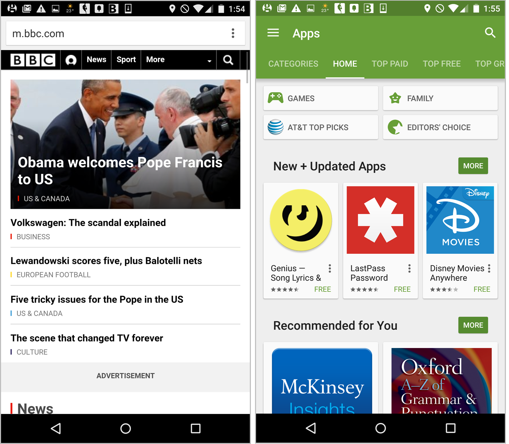

The aim of this presentation is
to document the most widely used UX Patterns for Navigation on Mobile devices, with a view to informing how to create a powerful, flexible and useable UI on that platform.
Questions we are trying to answer;
Why Mobile first?
With such limited real estate on small screens, UX designers must prioritize the most important aspects of their apps.
By prioritising only the essential on a Mobile, we are not preventing the development of additional features for an enhanced Desktop experience.
But we are insisting on a decoupling of the essential from the additional which doesn't tend to happen when the Desktop is focused on first, and which a Mobile experience cannot be successful without.
Tab Bar
- The tab bar is a close relative of the top navigation bar specific to apps. It can appear at the top (Android mostly) or at the bottom of the page (iOS mostly).
- Tab bars are persistent (they don't move, period), that is, they are always visible on the screen, whether the user scrolls down the page or not.
- For this reason Tab Bars must be Non Modal by the definition of being locked to the Home Parent screens.
Facebook on iPhone (left) & Android (right) used a tab bar for the main navigation. Positioned at bottom on iPhone (+ icons labeled) & at top on Android.

Navigation Bar
Is essentially inherited from desktop design. It is simply a bar that enumerates the main navigational options across the top of the screen.
Google Play was able to fit more items in the navigation bar by using a carousel.
Navigation Bar Carousels
- Tab bars & navigation bars are well suited for sites with relatively few navigation options (< 5). Using a carousel can expand this number but items off the screen have a weak information scent (ie they tend to be forgotten about).
- This is likely less of a problem in our apps than on general websites, as there is more commitment to our apps and ultimately there is no solution that is a panacea.
Hamburger Menu
- Contains the main navigation options in a manner that usually hides the detailed options but makes them visible upon request
- Can contain a fairly large number of navigation options in a tiny space and can also easily support submenus, if needed
- Disadvantage is that it is less discoverable, since, as the old adage says, “out of sight is out of mind.”
Hamburger Menu Example
A hamburger menu as used for the global navigation options on USAToday.com. In essence a Modal screen that animates form the side.
Navigation Hub
- A page (usually homepage) that lists all the navigation options. To navigate to a new location, users have to first go back to the hub
- Usually devotes the homepage exclusively to navigation (at the expense of content), and incurs an extra step (back to the hub) for each use. It can work well in task-based apps
- Useful where users rarely accomplish more than one task during a single session, and thus they don’t need to traverse the navigation tree often (an action that is difficult if all navigation must go through the homepage)
Google Navigation Bar 2
And again for a return on the results for the search 'U2';
- Band Context banner
- Overview tab
- List tab (Albums)
- + other tabs
Google Navigation Bar 3
And again when we click on the album 'War';
- Album Context banner
- Overview tab
- List tab (Songs)
- + other tabs
Google Navigation Bar 4
And again when we click on the song 'New Years Day';
- Song Context banner
- Overview tab
- List tab (Other Records)
- + other tabs
Take aways
- The content can be used to provide a navigational stairs spanning the system from the top level to the bottom
- Additional 'non offspring' content (for example - Overviews) can be accommodated through the use of multiple tabs at each level
- Multiple branches can be supported
- The above is true of many types of Google content - Mammals can be navigated down to Qinling panada
Asana Modals
If we consider some of the elements of the Asana app on a Mobile
- Page name
- User Logged In
- Home level Menu
Asana Modals 2
On the Homepage
- Page name
- Home level Menu
- List tabs
Asana Modals 3
And again when we click on a Project 'CI Design System';
- Back button
- Context Title
- List tab
- + other views
Asana Modals 4
And again when we click on a Task 'Icon Component ...';
- Back button
- Context Title
- Context Menu
- List
- Parent name
Asana Modals 5
And again when we click on a Subtask 'Need Styleguide ...';
- Back button
- Context Title
- Context Menu
- Parent name
Take aways
- A Context menu can be used to provide functionlity for that particular view
- As well as providing links to navigate around, the content can layer on top of itself as discreet Task Modals, to allow the full use of the screen canvas for that 'Task'
- Cul de sacs can be avoided with the use of the back arrow
Conclusions
- A mix of the 2 Patterns illustrated above will support Navigation through the content - think 'Stairs'
- A Hierarchical nav (think 'Lift') and Search (think 'Willy Wonka Lift') can be supported through the use of a Hamburger menu
- These Patterns can be enhanced on the larger canvas of a Desktop but should still be relatable between devices for users and developers
Expand - Amazon, Gmail
Context
A Navigation Bar is more suited to our systems as it is a more flexible Pattern and can be put to use in creating a navigation that can support an infinite amount of navigating up and down a rich information hierarchy.